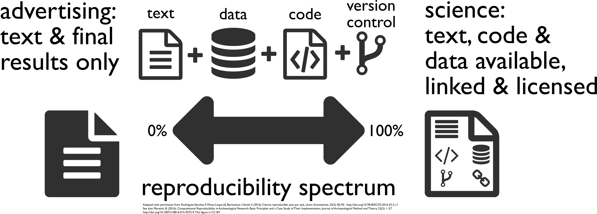

GIS 710: Geospatial Analytics for Grand Challenges
November 12, 2018
Reproducibility of Computational Articles
Stodden et al. (PNAS, March 13, 2018)
204 computational articles from Science in 2011–2012
Stodden, V., Seiler, J., & Ma, Z. (2018).
An empirical analysis of journal policy effectiveness for computational reproducibility.
In: Proceedings of the National Academy of Sciences
115(11), p. 2584-2589.
DOI 10.1073/pnas.1708290115
Discussion questions:
Do you know about similar studies?
What do they say?
Open Science Beginnings
First journal ever published: Philosophical Transactions (of the Royal Society)
archiving so that we preserve knowledge for the future
dissemination so that people can use this knowledge
peer review so that we know it's worth it
Discussion questions:
Do you agree with these publishing goals?
How are these different from goals of science?
Are these publishing goals fulfilled by journal papers?
Open Science

[Buckheit and Donoho 1995, Peng 2011, Rodríguez-Sánchez et al. 2016, Marwick 2016]
Discussion questions:
Do you agree with this spectrum?
On which side of the spectrum have you published?
Open Science Components
6 pillars [Watson 2015]:
open methodology
open access
open data
open source
open peer review
open education (or educational resources)
other components:
open hardware
open formats
open standards
related concepts:
Open-notebook science
Science 2.0 (like Web 2.0)
Citizen science
Public science
Participatory research
Open innovation
Crowdsourcing
Preprints
Inner source
Discussion questions:
What would add to the list?
Do you see something for the first time?
The “re” Words
No agreement on some of the definitions especially in different fields;
definitions are often overlapping or swapped, some don't make any distinction.
replicability independent validation of specific findings
repeatability same conditions, people, instruments, ... (test–retest reliability)
recomputability same results in computational research
reproducibility obtain again same results from the raw data
reusability use again the same data or methods
For example, Ince et al. (2012) in computational science
distinguishes direct reproducibility as rerunning of the code and
indirect reproducibility as validate something other than the entire code.
Discussion questions:
How do want science to look like?
Are there some minimal requirements?
What should be possible or easy to do for you
when you receive a scientific publication (e.g. for review)?
Internal Reasons for Open Science
Internal or selfish reasons for doing open science
in your lab:
collaboration work together with your colleagues
transfer transfer research between you and your colleague
yourself:
revisit revisit or return to a project after some time
correction correct a mistake in the research
extension improve or build on an existing project
Discussion questions:
What is your experience with getting back to your own research
or continuing research started by someone else?
(See PhD Comics: Scratch.)
What Open Means
open, free, libre
The Open Definition
Open means anyone can freely access, use, modify, and share
for any purpose
(subject, at most, to requirements that preserve
provenance and openness).
[as officially summed up]
Free Cultural Works
The Open Source Definition
The Free Software Definition
the Debian Free Software Guidelines and the Debian Social Contract
Discussion questions:
What is the difference between “free as in free beer” and “free as in freedom”?
Have you seen “open” being used for something not fulfilling the definition?
Discussion questions:
Do you read “terms and conditions”?
Have you ever read any “terms and conditions” or end user license agreement (EULA)?
What about an open source software license?
(Read license of GDAL right now!)
Computational and Geospatial Research
code part of method description
[Ince et al. 2012, Morin et al. 2012, Nature Methods 2007]
use of open source tools is part of reproducibility
[Lees 2012, Alsberg & Hagen 2006]
easily reproducible result is a result obtained in 10 minutes
[Schwab et al. 2000]
geospatial research specifics:
some research introduces new code
some research requires significant dependencies
Discussion questions:
Is spatial special?
Is recomputing the results useful for research?
Should dependencies be open source as well?
How long should it take to recompute results?
Open Science Publication: Use Case
Petras et al. 2017
Petras, V., Newcomb, D. J., & Mitasova, H. (2017).
Generalized 3D fragmentation index derived from lidar point clouds.
In: Open Geospatial Data, Software and Standards 2(1), 9.
DOI 10.1186/s40965-017-0021-8
Discussion questions:
What are other technologies which are good fit for these components?
Are there other components or categories?
Open Science Publication: Software Platform
Preprocessing, visualization, and interfaces (GUI, CLI, API)
Data inputs and outputs, memory management
Integration with existing analytical tools
Preservation of the reusable code component (long-term maintenance)
Dependency which would be hard to change for something else
Example: FUTURES model implemented as a set of GRASS GIS modules
(r.futures.pga, r.futures.demand, r.futures.parallelpga, ...)
Discussion questions:
Discussion questions:
What software can play this role?
What are the different levels of integration with a piece of software?
References
Alsberg, Bjørn K., and Ole Jacob Hagen. “How Octave Can Replace Matlab in Chemometrics.” Chemometrics and Intelligent Laboratory Systems, Selected papers presented at the 9th Scandinavian Symposium on Chemometrics Reykjavik, Iceland 21–25 August 2005, 84, no. 1 (December 1, 2006): 195–200. doi:10.1016/j.chemolab.2006.04.025.
Buckheit, Jonathan B., and David L. Donoho. “WaveLab and Reproducible Research.” In Wavelets and Statistics, edited by Anestis Antoniadis and Georges Oppenheim, 103:55–81. Lecture Notes in Statistics. New York, NY: Springer New York, 1995. doi:10.1007/978-1-4612-2544-7_5.
Ince, Darrel C., Leslie Hatton, and John Graham-Cumming. “The case for open computer programs”. In: Nature 482.7386 (2012), pp. 485–488. doi:10.1038/nature10836
Lees, Jonathan M. “Open and free: Software and scientific reproducibility”. In: Seismological Research Letters 83.5 (2012), pp. 751–752. doi:10.1007/s10816-015-9272-9
Marwick, Ben. “Computational reproducibility in archaeological research: basic principles and a case study of their implementation”. In: Journal of Archaeological Method and Theory 24.2 (2017), pp. 424–450. doi:10.1007/s10816-015-9272-9
Morin, A et al. “Shining light into black boxes”. In: Science 336.6078 (2012), pp. 159–160. doi:10.1126/science.1218263
Peng, Roger D. “Reproducible Research in Computational Science.” Science (New York, N.Y.) 334, no. 6060 (December 2, 2011): 1226–27. doi:10.1126/science.1213847
Petras, Vaclav, Douglas J. Newcomb, and Helena Mitasova. “Generalized 3D Fragmentation Index Derived from Lidar Point Clouds.” Open Geospatial Data, Software and Standards 2, no. 1 (April 2017): 9. doi:10.1186/s40965-017-0021-8.
Rocchini, Duccio and Markus Neteler. “Let the four freedoms paradigm apply to ecology”. In: Trends in Ecology and Evolution (2012). doi:10.1016/j.tree.2012.03.009
Rodriguez-Sanchez, Francisco, Antonio Jesús Pérez-Luque, Ignasi Bartomeus, and Sara Varela. “Ciencia Reproducible: Qué, Por Qué, Cómo.” Revista Ecosistemas 25, no. 2 (2016): 83–92.
Schwab, Matthias, Martin Karrenbach, and Jon Claerbout. “Making Scientific Computations Reproducible.” Computing in Science & Engineering 2, no. 6 (2000): 61–67. doi:10.1109/5992.881708.
Stodden, V., Seiler, J., & Ma, Z. (2018). “An empirical analysis of journal policy effectiveness for computational reproducibility.” In: Proceedings of the National Academy of Sciences 115(11), p. 2584-2589. doi:10.1073/pnas.1708290115
Watson, M. (2015). When will ‘open science’ become simply ‘science’?. Genome biology, 16(1), 101. doi:10.1186/s13059-015-0669-2
 Stodden, V., Seiler, J., & Ma, Z. (2018).
An empirical analysis of journal policy effectiveness for computational reproducibility.
In: Proceedings of the National Academy of Sciences
115(11), p. 2584-2589.
DOI 10.1073/pnas.1708290115
Discussion questions:
Do you know about similar studies?
What do they say?
Stodden, V., Seiler, J., & Ma, Z. (2018).
An empirical analysis of journal policy effectiveness for computational reproducibility.
In: Proceedings of the National Academy of Sciences
115(11), p. 2584-2589.
DOI 10.1073/pnas.1708290115
Discussion questions:
Do you know about similar studies?
What do they say?


{kind=link}
{kind=link}
{kind=link}